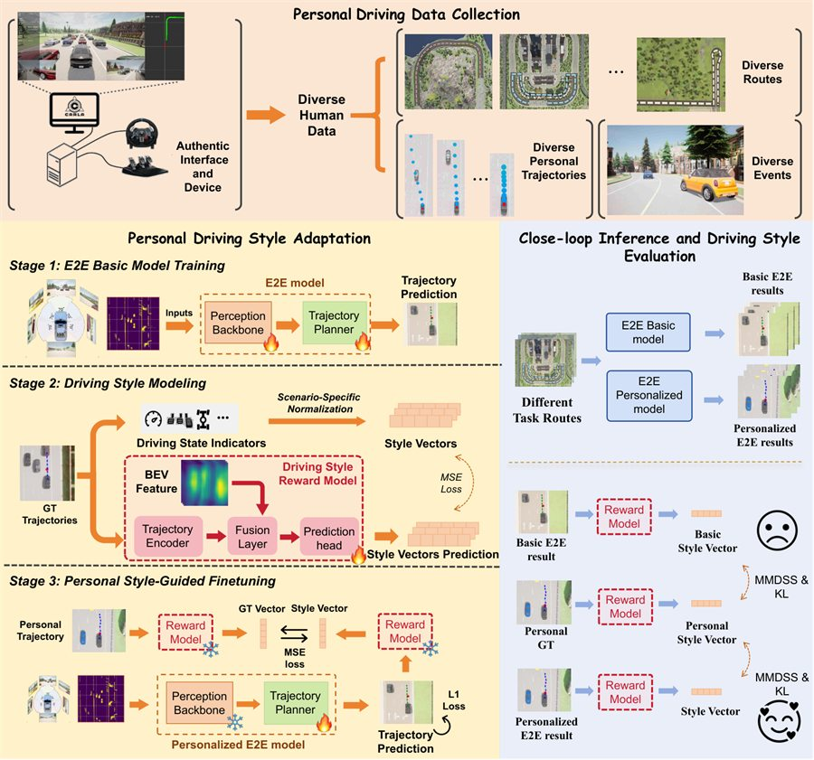
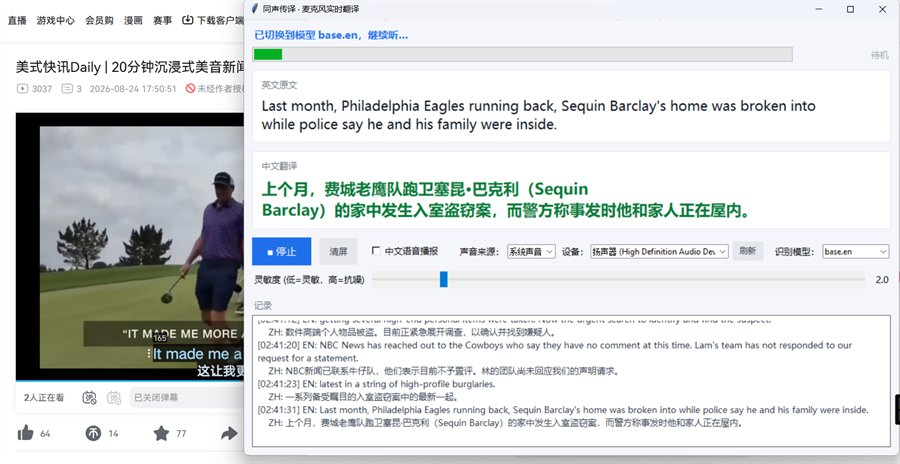
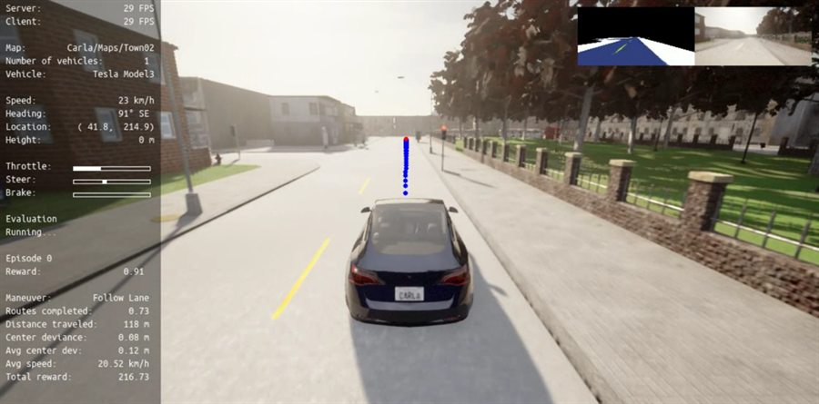

Hi, I'm Ruiqin Li.
I'm studying Electrical and Computer Engineering (ECE) at the National University of Singapore. Right now I'm going deeper into autonomous driving and active safety, AI sensors and VR/AR, deep reinforcement learning, embodied AI, world action models, and AI-related hardware optimization.
About
I'm at the Department of Electrical and Computer Engineering (ECE) at the National University of Singapore, going deeper into autonomous driving and active safety, AI sensors and VR/AR, deep reinforcement learning, embodied AI, world action models and AI-related hardware optimization.
In my spare time I build small tools I use regularly; most of what I've made is on GitHub.
Papers
-
Driving Like Yourself: A Benchmark for Closed-Loop Personalized End-to-End Autonomous Driving
ECCV 2026Person2Drive is a benchmark and platform for personalized end-to-end autonomous driving. It comes with a data collection system for building personalized driving datasets, metrics based on MMD and KL divergence for quantifying individual driving styles, and a personalization framework that fine-tunes only the trajectory prediction head — so the pretrained backbone stays intact and driving performance is preserved.

Person2Drive framework overview. Figure from Dong et al., ECCV 2026.
Projects
-
live-interpreter
SpeechA lightweight real-time English to Chinese interpreter. It listens to your microphone and translates as you speak, entirely on your own machine — no cloud service involved.

Running on a live news broadcast. -
CARLA-SB3-RL-Training-Environment
Reinforcement learningA reinforcement learning training and evaluation environment built on the CARLA simulator and Stable-Baselines3, for quickly reproducing experiments and comparing algorithms in driving scenarios.

Training inside CARLA, with the evaluation HUD.
Contact
- Email liruiqin@u.nus.edu
- GitHub github.com/toyosatomimi98
- Scholar Google Scholar profile
- Based in Singapore